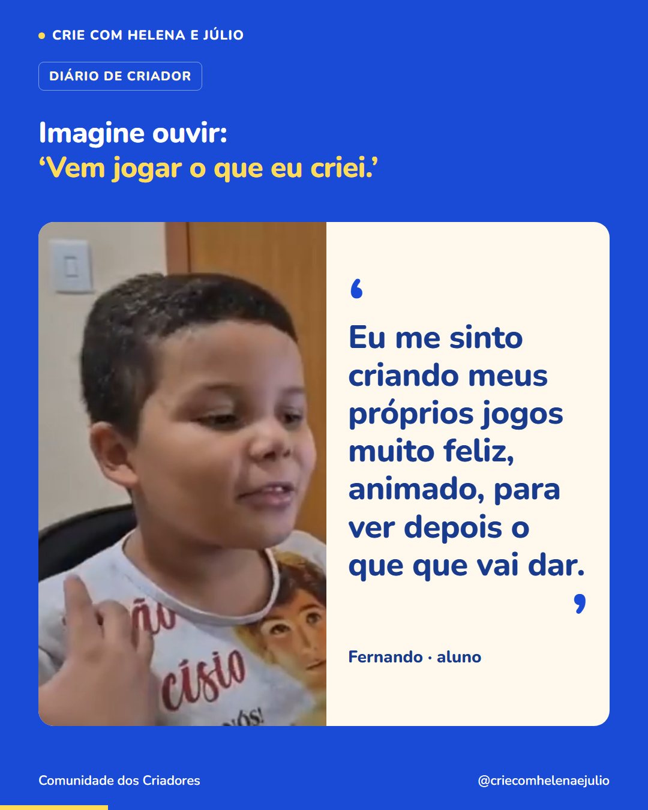

P33 · Imagine ouvir: ‘Vem jogar o que eu criei.’
Imagem única · 1080 × 1350 · Diário de criador · Primeira publicação da semana 6


Legenda completa
Fernando contou a alegria de criar algo e depois ver o resultado funcionando. ‘Eu me sinto criando meus próprios jogos muito feliz, animado, para ver depois o que que vai dar.’ Imagine seu filho querendo compartilhar uma descoberta assim com você. Quando seu filho quiser mostrar uma criação, peça para jogar e deixe ele explicar. Pergunte qual parte ele mais gostou de fazer ou o que ainda quer acrescentar. Esse momento dá espaço para ele contar as escolhas que fez. Siga o perfil para conhecer mais histórias de crianças que estão criando jogos.